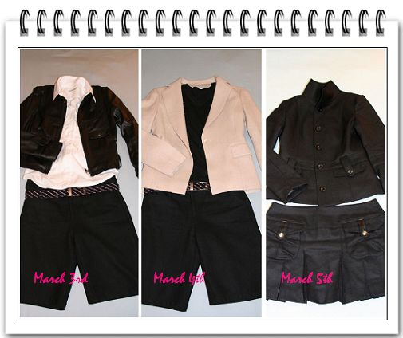

二八月‘乱穿衣’ @ Mar 05, 2007
这两天温度变化很大。
3-3，皮衣夹克里只穿了衬衣一件，下午时鼻尖上微微冒汗，晚饭后风吹到身上已然感到寒意；
3-4，天色让人感到温度的变化，换了毛衣和羊毛外套，户外的寒冷还能忍受；
3-5，星期一工作日，非常有心情穿上这条超短毛料裙，一双黑色翻毛长靴，高领孔雀蓝毛衣，外面一件长款非常薄的黑色棉风衣。
今天听说沈阳下大雪，学生都停课在家。上天会不会赐给入春后的南京一个雪世界？去年春节南京下大雪的，记得非常清楚，下雪天在湖畔看了好几场烟花。据说政府通告元宵节那天为最后一天放烟花日，小年前鞭炮和烟花一直热闹着每个夜晚。生活是否由各种声音组成的？少了炒菜声、洗碗声、烧水声，少了家人隔着房间大声回答、一起看电视相互讨论....生活会少了许多有意思的体会，不是吗？可是过去我却不是这么想的。
